ITL/セットアップ編
目次
1 Mac のセットアップ
1.1 ソフトウェア・アップデートの実行
Mac に入っている OS が最新のものになっていない場合，後述する機能が使えない可能性があるばかりか，悪意のある攻撃に対する脆弱性が修正されていないかもしれない．
- メニューバー左上のリンゴマーク→ソフトウェア・アップデートを実行
1.2 キーバインドの変更
1.2.1 ctrl と caps lock を入れ替える
本研究室では ctrl を多用するので，あまり使わない caps lock と入れ替える．
- システム環境設定→キーボード→修飾キー を開いて設定
1.2.2 spotlight のキーバインドを ctrl + shift + space に変更
デフォルトでは ctrl + space だが，このキーバインドは後述する Emacs で「mark set」の機能に割当てられている．
- システム環境設定→spotlight を開いて設定
1.3 Trackpad の設定
- システム環境設定→トラックパッド
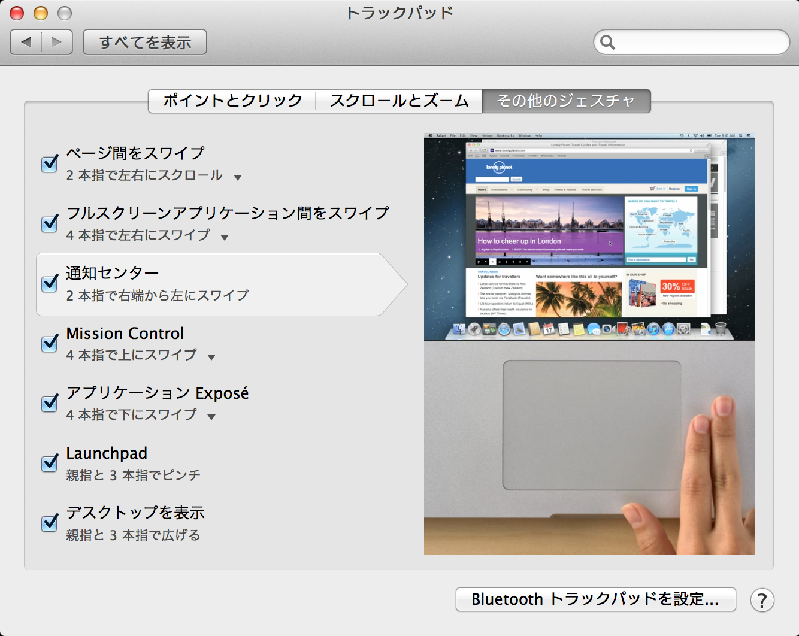
1.4 キーボード・ショートカット
- Mac では ⌘ (command), control, shift, option のキーとアルファベットや数字キーを組み合わえることで様々な機能を呼び出せる． http://support.apple.com/kb/HT1343?viewlocale=ja_JP
1.4.1 覚えておくと便利なショートカット
| ショートカット | 機能 |
|---|---|
| ⌘+c | コピー |
| ⌘+v | ペースト |
| ⌘+w | ウィンドウを閉じる |
| ctrl + shift + space | spotlight |
| ctrl + option + space | spotlight を Finder 上で起動 |
| ⌘+h | ウィンドウを隠す |
| ⌘+m | ウィンドウを最小化 |
| ⌘+q | 終了 |
| ⌘+option+esc | アプリケーションの強制終了 |
2 ソフトウェアのインストール方法
Mac ではソフトウェアのインストール方法に3通りある．
- App Store からインストールする
- .app ファイルをアプリケーション・フォルダに移動させる
- .pkg ファイルをダブルクリックする
2や3の方法の場合，必要となるファイルが dmg (仮想ドライブイメージ)ファイルとして提供されている場合がある． dmg ファイルをダブルクリックすると，新しいドライブが認識される．その中に .app ファイルが入っていたり，.pkg ファイルが入っていたりする．
3 セキュリティソフトウェアのインストール
- f-secure は後述する homebrew のパッケージディレクトリ(
/usr/local/)を「汚染」しない． - SEPの方が安定しているようだが
/usr/local/lib/の下に.dylibを作るので面倒．
3.1 f-secure
3.1.1 インストール方法
- TAINS のホームページからセキュリティ対策ソフトウェア->エフセキュアを選択： https://www2.tains.tohoku.ac.jp/fw/dfw/INFO/modules/pico/index.php?content_id=16
- 「ダウンロード」ボタンから dmg ファイルをダウンロードする
- dmg ファイルをマウントし，F-Secure****.mpkg というファイルをダブルクリック
3.1.2 ライセンスコードの取得
- 同じページから「ライセンスキーコードを取得する」ボタンをクリック
- 「ご了解，ご注意事項」を読んだ後「同意する」ボタンをクリック
- ライセンスコードがいくつか表示されるので，その中の1つ(どれでもいい)を エフセキュアのライセンスコード入力欄にコピー＆ペースト
3.1.3 アンインストール方法
コマンドラインから以下を実行(参考)：
sudo /usr/local/f-secure/bin/uninstall_MacProtection
3.2 Symantec Endpoint Protection (SEP)
3.2.1 インストール方法
- TAIN のホームページからセキュリティ対策ソフトウェア->シマンテックを選択： https://www2.tains.tohoku.ac.jp/fw/dfw/INFO/modules/pico/index.php?content_id=3
- MacOS X (32/64ビット)からダウンロードをクリック
- dmg ファイルをマウントし「Symantec Endpoint Protection Installer」というファイルをダブルクリック
- 指示に従って再起動する
4 Terminal.app の起動と設定
以降では，ターミナル(Terminal.app)をよく使う．
以下の設定ファイルを作成/編集することで，より便利に使えるようになる．
~/.bash_profile # PATH や よく使うコマンドの別名(alias)など ~/.inputrc # 入力のカスタマイズ
4.1 ~/.inputrc の設定
ターミナルでは，上下キーや Ctrl-n / Ctrl-p によって過去に入力した履歴を表示させられる．
さらに，=~/.inputrc= に以下を記載しておくと，最初の数文字を入力してから上下キーや Ctrl-n/Ctrl-p を押すと，
その文字で始まる履歴のみを表示させられる．
ターミナルで以下のように入力すれば， ~/.initrc を作成できる．
cd ~/
curl -O https://gist.githubusercontent.com/nagae/10461176/raw/.inputrc
5 BetterTouchTools のインストールと設定
5.1 BTT の特徴
- Trackpad による様々なジェスチャーを各種機能に設定できる
5.2 インストール方法
5.2.1 マウスを使う場合
- http://www.boastr.de/ から BetterTouchTool.zip をダウンロード
- BetterTouchTool.zip をダブルクリック
- 生成された BetterTouchTool.app を
/Applications/フォルダに移動．
5.2.2 ターミナルだけでも行える
cd ~/Downloads/
curl -LO http://bettertouchtool.net/BetterTouchTool.zip
unzip -o BetterTouchTool.zip
mv BetterTouchTool.app/ /Applications/
5.3 Window Snapping の設定
"Do you want to activate Window Snapping (…)?" というメッセージが出るので 「Yes, activate the window snapping!」を選択
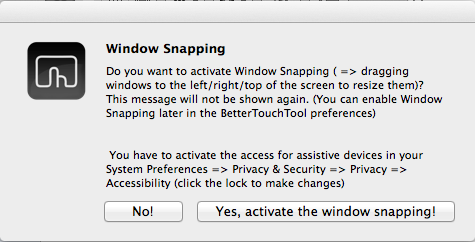
しばらく待つと「"BetterTouchTool"はアクセシビリティ機能を使用してこのコンピュータを制御することを求めています。」というダイアログが出るので「"システム環境設定"を開く」を選択
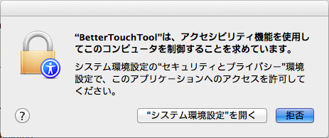
設定を変更するために右下の鍵マークをクリックし，パスワードを入力
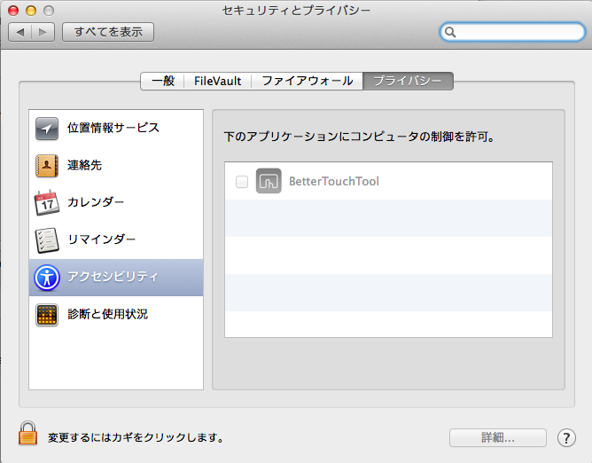
「下のアプリケーションにコンピュータの制御を許可。」欄にある BetterTouchTool の横のチェックボックスをチェック．
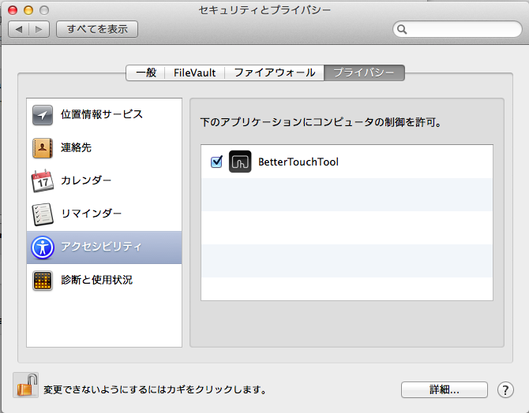
5.4 設定例
5.4.1 ログインと同時に起動するように
Preference -> Settings -> Launch BetterTouchTools on startup をチェック
5.4.2 Global Setting
- 設定ファイル をダウンロード
BetterTouchTool の左メニューから「Import」を選択し，ダウンロードしたファイルを選択
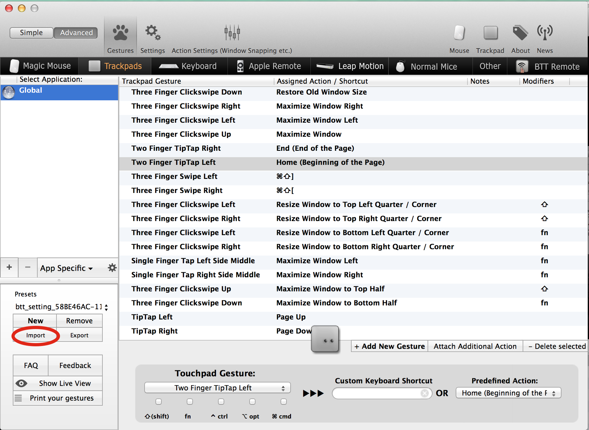
| ジェスチャー | 機能 | 解説 |
|---|---|---|
| Corner Click Bottom Right | Sleep Display | Trackpadの右下をクリック : ディスプレイをスリープ |
| Three Finger Click | Lookup word under cursor | 3本指クリック: カーソル下の単語を調べる |
| Three Finger Clickswipe Down | Restore old window size | 3本指で下へクリック・スワイプ : ウィンドウのサイズを元に戻す |
| Three Finger Clickswipe Left | Maximize Window Left | 3本指で左へクリック・スワイプ : ウィンドウを画面の左半分にスナップ・最大化 |
| Three Finger Clickswipe Right | Maximize Window Right | 3本指で右へクリック・スワイプ : ウィンドウを画面の右半分にスナップ・最大化 |
| Three Finger Clickswipe Up | Maximize Window | 3本指で上へクリック・スワイプ : ウィンドウを最大化 |
| Three Finger Clickswipe Left + Shift | Resize Window to Top Left Quarter/Corner | シフト+3本指で左へクリックスワイプ：ウィンドウを左上4分の1にスナップ |
| Three Finger Clickswipe Left + fn | Resize Window to Bottom Left Quarter/Corner | fn +3本指で左へクリックスワイプ：ウィンドウを左下4分の1にスナップ |
| Three Finger Clickswipe Right + Shift | Resize Window to Top Right Quarter/Corner | シフト+3本指で右へクリックスワイプ：ウィンドウを右上4分の1にスナップ |
| Three Finger Clickswipe Right + fn | Resize Window to Bottom Right Quarter/Corner | fn +3本指で右へクリックスワイプ：ウィンドウを右下4分の1にスナップ |
| TipTap Left | Page Up | 2本の指を置いた後，左側の指をタップ：上スクロール |
| TipTap Right | Page Down | 2本の指を置いた後，右側の指をタップ：上スクロール |
| Two Finger TipTap Right | End (end of the page) | 3本の指を置いた後，一番右側の指でタップ：ページの最後へ（fn + →と同じ） |
| Two Finger TipTap Left | Home (beginning of the page) | 3本の指を置いた後，一番左の指でタップ：ページの先頭へ（fn + ←と同じ） |
| Three Finger Swipe Left | ⌘⇧] | 3本指で右から左へスワイプ : 右のタブへ(Safari.app, Terminal.app, Firefox.app, Google Chrome.app などで共通に利用可能) |
| Three Finger Swipe Right | ⌘⇧[ | 3本指で左から右へスワイプ : 左のタブへ |
6 各種サービスのアカウント作成とユーティリティのインストール
6.1 iCloud (https://www.icloud.com)
6.1.1 特徴
- 無料で5GBのクラウドストレージ．
- MacやiOS デバイス間でMail/Safariのブックマーク/iCalendarを同期させたり，iOSデバイスのデータや設定をバックアップしたりできる．
- GoodReaderを始め，各種iOS Appからのアクセスが容易だが，ローカル・フォルダとの同期は無い．
6.1.2 アカウント作成・ユーティリティ
6.2 Dropbox (https://www.dropbox.com/)
6.2.1 特徴
- 無料で2GBのクラウドストレージ．
- 30日まで 履歴を保存しているので，うっかり上書き・削除してしまっても復元可能．
- ローカルの
~/Dropboxフォルダと自動的に同期． - .emacs, texmf, skk 辞書などの保存には便利．
- iOS からもファイル閲覧可能．
6.2.2 アカウント作成・ユーティリティ
- http://db.tt/pqpSl9b からアカウントを作成
- https://www.dropbox.com/downloading?src=index からユーティリティをダウンロード．
6.3 Cloud.app (http://getcloudapp.com)
6.3.1 特徴
- ファイルの共有機能に特化．
- Cloud への保存と同時に，当該ファイルへのURLをクリップボードに送ってくれる．これをメールなどにペーストすることでファイルが共有可能．
- Finder から Ctrl + option + R とするだけで，上記作業が完了するので便利．
- 保存容量は無制限だが，無料プランの場合，アップロードできるファイルが 10ファイル/日，25MB/ファイル に限定される．
6.3.2 アカウント作成・ユーティリティ
- http://getcloudapp.com からアカウント作成＆ユーティリティをダウンロード
- アカウントを作成したら http://my.cl.ly/account の Privacy -> Default Privacy for New Drops のチェックを private にすること(→理由)
6.4 Github (https://github.com)
6.4.1 特徴
- Bitbucket と同じ git リポジトリ
- ちょっとしたコード断片の公開・管理に便利な gist システムを備える
- push したソースを Web 上からでも編集できる
- 公開リポジトリは無料で無制限に作成可能．プライベート・リポジトリは有料．
- ディレクトリ構造を持たない gist であればプライベートでも無制限に作成可能．
6.4.2 アカウント作成・ユーティリティ
- https://github.com から Sign up
- Mac 用のユーティリティとして http://mac.github.com が用意されている．
6.5 Bitbucket (https://bitbucket.org)
6.5.1 特徴
- Github と同様の git リポジトリ
- gist システムやソースのWeb編集機能は無い
- 公開/プライベートともに無制限にリポジトリを作成できる
- 5人までならプライベート・リポジトリを共有できる．アカデミック・アカウントなら無制限に共有できる(!)
- 長江研では メンバ・ページ を作って報告会の情報を共有している
6.5.2 アカウント作成・ユーティリティ
- https://bitbucket.org から sign up
- メールアドレスには東北大学のアドレス(
xxxx@dc.tohoku.ac.jp)を使うこと. - アカウントを作成したら，長江に通知．
- Mac 用のユーティリティとして http://www.sourcetreeapp.com が用意されている
6.5.3 参考サイト
6.6 Evernote (必須ではない)
6.7 Github / Bitbucket に SSH で接続する
6.7.1 公開鍵と秘密鍵の作成
~/.sshにSSH用の公開鍵と秘密鍵を作るmkdir ~/.ssh # ssh用のディレクトリを作る cd ~/.ssh # .ssh ディレクトリni移動 ssh-keygen -t rsa -f id_rsa # id_rsa という秘密鍵と id_rsa.pub という公開鍵を作る # パスフレーズを入力した後，同じものをもう一度入力． # ここで入力するパスフレーズは，Mac 本体へのログイン用と同じにしても問題無い． chmod 700 ~/.ssh # .ssh ディレクトリのアクセス権を「管理者のみ読み書き実行可」に変更 chmod 600 ~/.ssh/id_rsa.pub # 公開鍵のアクセス権を「管理者のみ読み書き可」に変更
ここで作成した公開鍵/秘密鍵のパスフレーズは，以下のコマンドで後から変更できる：
ssh-keygen -f id_rsa -p
6.7.2 Bitbucket に SSH の公開鍵を登録する
Bitbucket の右上のアバターから「Manage account」を選ぶ
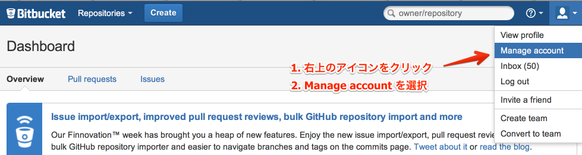
左側のメニューから「SSH keys」を選び，「Add Key」をクリック
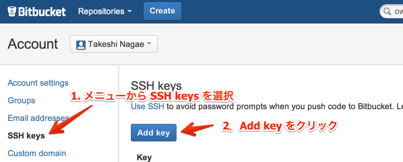
適当なラベルを与えたあと，公開鍵を Keys にコピーする．ターミナル上で
pbcopy < ~/.ssh/id_rsa.pub
としてから Key のところでペーストすると簡単．
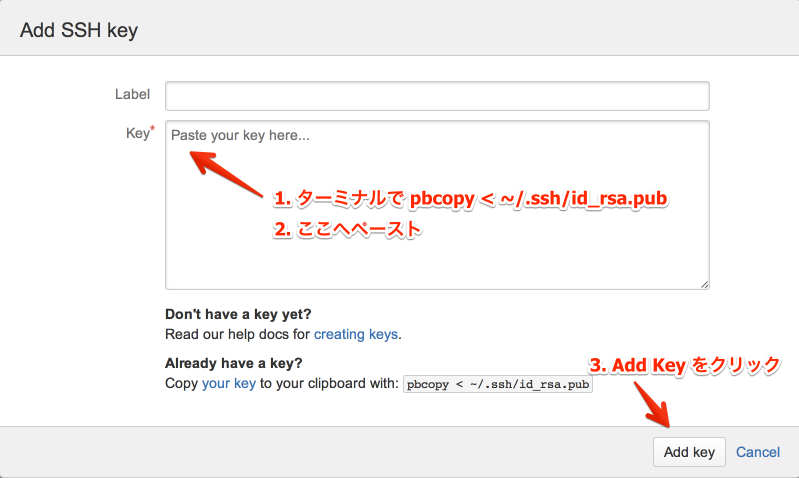
~/.ssh/configに以下を記載Host bitbucket User git Port 22 Hostname bitbucket.org IdentityFile ~/.ssh/id_rsa TCPKeepAlive yes IdentitiesOnly yes
これを実現する方法は2つある
- ターミナル上で Emacs を起動して編集する方法
まず，ターミナル上で
emacs ~/.ssh/config
として，Emacs を起動する．
- 上記をコピー＆ペーストする．
- 保存(C-x C-s: Ctrlを押しながら x, s とタイプする)した後， Emacs を終了(C-x C-c; Ctrl を押しながら x, cとタイプ)する．
pbpasteから追記する方法- 上記をコピーする．
ターミナル上で以下を入力：
pbpaste >> ~/.ssh/config echo >> ~/.ssh/config # 改行を加える
- 確認
追記したら，うまく記載できているか確認．ターミナル上で
less ~/.ssh/config
とする．
lessはqで終了できる．思った通りに記載できていなかったら emacs などで編集．
SSH接続を試してみる．ターミナル上で
ssh git@bitbucket.orgとしてみる．$ ssh git@bitbucket.org The authenticity of host 'bitbucket.org (207.223.240.182)' can't be established. RSA key fingerprint is 97:8c:1b:f2:..... Are you sure you want to continue connecting (yes/no)?
と表示されたら，
yesを入力．# (Warning が出ることもある) PTY allocation request failed on channel 0 conq: logged in as ****. # **** には bitbucket.org のアカウント名が入る You can use git or hg to connect to Bitbucket. Shell access is disabled. Connection to bitbucket.org closed.
と出れば成功．
6.7.3 Github に SSH の公開鍵を登録する
github.com の右上のユーザー名をクリック
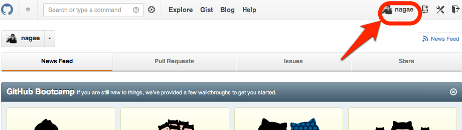
ダッシュボード画面で右上の「Edit Your Profile」をクリック
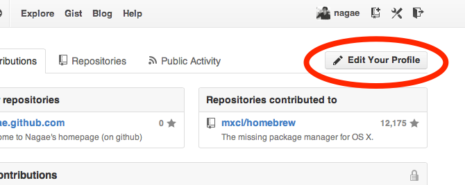
- 左側のメニューから「SSH Keys」を選び，「Add SSH Key」をクリック．
編集画面が開くので，Title に適当なラベルを与え(省略可能)，公開鍵を Key にペーストし「Add Key」をクリック．
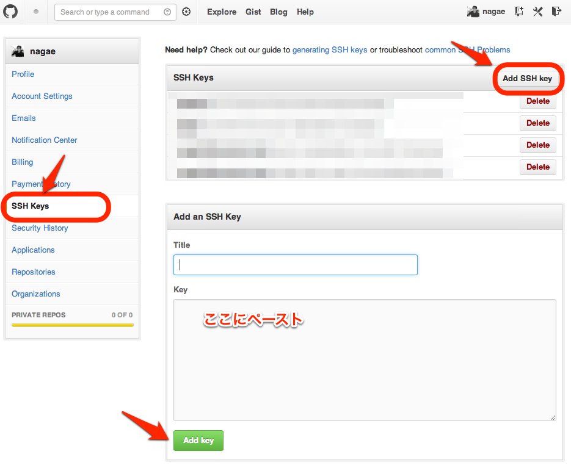
公開鍵をペーストする簡単な方法：ターミナル上で
pbcopy < ~/.ssh/id_rsa.pub
としてから Key のところでペースト(Command+V)．
~/.ssh/configに以下を追記(上述も参照)．Host github User git Port 22 Hostname github.com IdentityFile ~/.ssh/id_rsa TCPKeepAlive yes IdentitiesOnly yes
うまく記載できているか確認．ターミナル上で
$ less ~/.ssh/config
とする．less は
qで終了できる．思った通りに記載できていなかったら emacs などで編集．SSH接続を試してみる．ターミナル上で
ssh git@github.comとしてみる．$ ssh git@github.com The authenticity of host 'github.com (204.232.175.90)' can't be established. RSA key fingerprint is 16:27:ac:a5:76:.... Are you sure you want to continue connecting (yes/no)?
と表示されたら，=yes= を入力．
# (Warning が出ることもある) PTY allocation request failed on channel 0 Hi ****! You've successfully authenticated, but GitHub does not provide shell access. Connection to github.com closed. # **** には github.com のアカウント名が入る
と出れば成功．
6.7.4 その他の SSH サーバーを登録する
上述の方法を応用すれば，他の SSH サーバーにもSSH公開鍵を登録できる．
例えば， username@remote.to というサーバーに登録したい場合は，まず，以下のようにターミナルから入力する．
cat ~/.ssh/id_rsa.pub | ssh username@remote.to "cat>>.ssh/authorized_keys"
次に ~/.ssh/config に以下を追記する：
Host alias User username Port 22 Hostname remote.to IdentityFile ~/.ssh/id_rsa TCPKeepAlive yes IdentitiesOnly yes
6.7.5 Mac の keychain にパスワードを記録する
SSH 用のパスワードを毎回入力するのはかなり面倒. 下記をターミナルから実行しておくことで, Mac の keychain にSSHパスワードを記録しておける.
ssh-add -K ~/.ssh/id_rsa